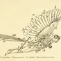
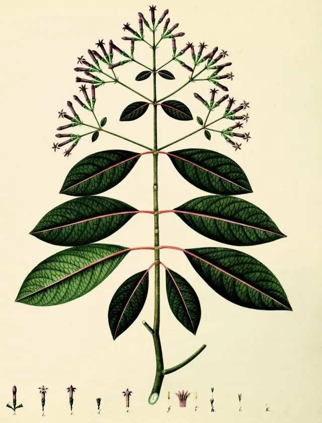
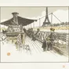
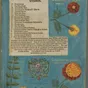
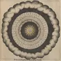
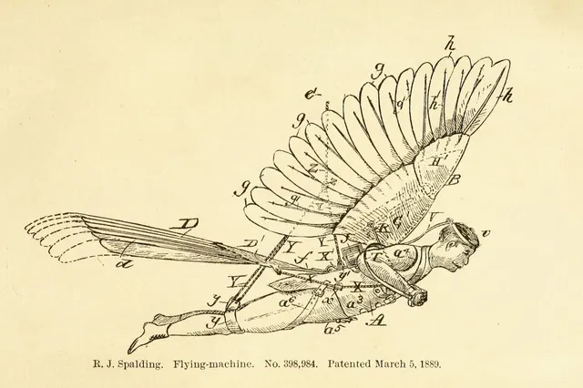
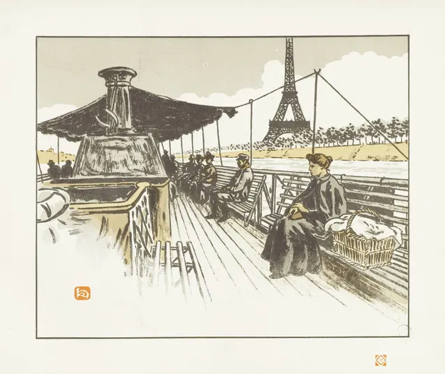

1
Sev 3 · Mayor

HallazgosMarca el hallazgo en el lugar exacto
Un clic sobre la pantalla fija el pin y la severidad. Después filtras por lo que más urge.
Mutis UX · Beta gratuita
Diagnostica la experiencia de un producto en un solo lugar. Sube las pantallas, marca los hallazgos y mapea el recorrido de las personas. Tu criterio al mando, la herramienta a tu servicio.
Beta privada: revisamos cada solicitud y te escribimos cuando tengas acceso.

Cada función, en el momento en que te ahorra trabajo.

HallazgosUn clic sobre la pantalla fija el pin y la severidad. Después filtras por lo que más urge.

RecorridosDiagrama el camino de la tarea y mira dónde cae la curva emocional de la persona.

ReportesElige las secciones, revisa la vista previa y comparte un link con PIN. Tus hallazgos y recorridos quedan ordenados, listos para que tu cliente los vea.

PropuestasArma planes con precio fijo o mensual, qué incluye cada uno y descuentos por pago adelantado. Aparecen en el reporte, en "Trabajemos juntos", y tu cliente reserva el que elija.
Hallazgos
Un hallazgo es una observación concreta que se puede ver y validar. Márcalo sobre la pantalla, asígnale una severidad y apóyalo en una heurística de Nielsen o en un sesgo del catálogo.

Un clic marca el lugar exacto del hallazgo.
Prioriza con la escala de Nielsen.
Las 10 de Nielsen y un catálogo que puedes ampliar.
Mira primero lo que más urge.
Recorridos
Ninguna pantalla vive sola. Mapea la experiencia por etapas, con lo que la persona hace, piensa y siente en cada paso, y ubica cada hallazgo donde ocurre.

| Etapas | Descubrimiento | Consideración | Decisión | Conversión | Experiencia de usuario | Fidelización |
|---|---|---|---|---|---|---|
| Emocionalidad Muy positivo Muy negativo |
|
|||||
| Acciones | Ve un anuncio y entra al sitio | Compara opciones y lee reseñas | Elige una y revisa el precio final | Crea su cuenta y paga | Usa el servicio | Califica y vuelve a reservar |
| Pensamiento | ¿Esto es para mí? | ¿Puedo confiar en esto? | ¿Qué pasa si cancelo? | Ojalá sea rápido | Es lo que esperaba | Quiero repetirlo |
| Pain points | Mensaje poco claro | Pocas reseñas visibles | Política de cambios escondida H2 · Sev 3 | Pide demasiados datos | Sin aviso previo | Sin recordatorio para volver |
Desliza la tabla hacia los costados para ver todas las etapas.
Reportes
Cuando terminas el diagnóstico, el reporte ya está armado: hallazgos, flujos y recorridos ordenados, y tus propuestas de trabajo al final. Explóralo: cambia de sección en el menú de la izquierda.
Presentación
Marina
Gracias por tu tiempo y por el interés en este diagnóstico. Lo preparé para ayudarte a ver con claridad dónde tu producto facilita el camino de las personas y dónde se lo complica.
Hecho por una persona
Revisé y validé cada hallazgo con mi experiencia en diseño de experiencia de usuario. El criterio y las conclusiones son míos.
Es un diagnóstico inicial
Es un punto de partida para priorizar y conversar los próximos pasos.
Hallazgos
El logo no lleva al inicio
Al confirmar el pedido no pasa nada
El costo de envío aparece recién al final
Los filtros no muestran cuáles están activos
Etiquetas confusas en el menú
El selector de talla no tiene ejemplo
Flujos
Mira el diagrama de interacciones del flujo.
Comprar un producto
Quiero comprar mi primer pedido en pocos minutos
Los números marcan los hallazgos de cada paso.
User Journeys
Mapa completo del recorrido actual de Tienda Brisa.
Contacto
tu-correo@tu-estudio.com
www.tu-estudio.com
Cada reporte lleva tus datos de contacto, y el botón "Trabajemos juntos" muestra tus propuestas de trabajo.
Trabajemos juntos
Elige cómo quieres avanzar sobre este diagnóstico. Reservas tu lugar y te escribo para coordinar los detalles.
Precio fijo
Diagnóstico completo
US$ 300
Recomendado
Plan fijo mensual
Plan mensual · Aliado
US$ 500 /mes
Trimestral (3 meses): -10% · US$ 1.350 (US$ 450/mes)
ReservarPlan fijo mensual
Propuesta mensual · Pro
US$ 1.000 /mes
Tu cliente abre el reporte con un link y un PIN de 6 dígitos.
Antes de verlo acepta las condiciones, y te queda el registro.
Elige las secciones que entran en el reporte antes de compartirlo.
Tu próximo cliente
Un buen diagnóstico demuestra cómo piensas y todo lo que sabes hacer. Mutis UX lo convierte en una pieza que trabaja por ti.
Cada hallazgo con su evidencia, su severidad y tu recomendación. Tu cliente ve cómo trabajas antes de contratarte.
El reporte vive online. Tu cliente lo abre con su link y su PIN cada vez que quiere revisarlo, sin descargar nada ni crear una cuenta.
Construye una propuesta con tus evidencias, tu metodología, tu contacto, tu modelo de contratación y precio, fácil de entender para tu prospecto.
Al terminar de leer, tu cliente puede reservar tu propuesta desde el mismo reporte. El diagnóstico se vuelve el primer paso a tu próximo proyecto.
Preguntas frecuentes
Sí. La beta es gratuita y privada: pides tu acceso en el formulario, revisamos cada solicitud y te escribimos cuando puedas entrar.
Para quienes trabajan en diseño UX/UI y entregan diagnósticos de experiencia a sus clientes.
No. Mutis UX no genera reportes automáticos ni diagnósticos con inteligencia artificial. Ordena tu trabajo en un solo lugar y agiliza la entrega. Las conclusiones son tuyas.
Un reporte de solo lectura, con un link y un PIN de 6 dígitos. Eliges qué secciones ve: hallazgos, flujos, journeys, diagnóstico, propuestas y contacto. Tu cliente acepta las condiciones de uso antes de abrirlo.
Si cambias el diagnóstico, actualizas el reporte desde el mismo lugar. También puedes generar un PIN nuevo o dejar de compartirlo cuando quieras.
Las fichas de protopersonas están en desarrollo y todavía no tienen fecha de llegada.